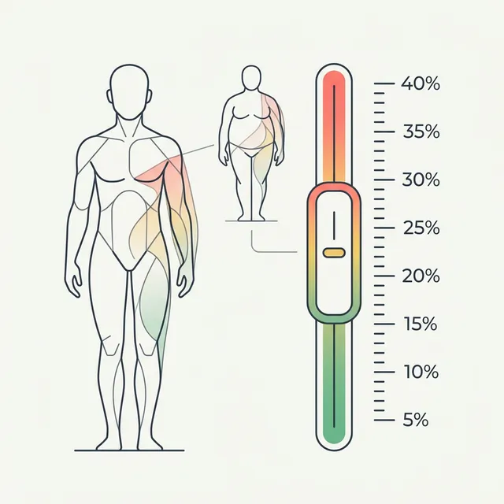

Body Fat % for a Visible Jawline (Men): Targets by Face Type
The gym progress is showing everywhere except your face. Here's the actual BF% you need for jaw definition — and why it depends on more than just the number.

You've been cutting for months. The scale is down. Arms look leaner. Veins in your forearms. And yet your face still looks… soft. Like it didn't get the memo.
Face fat is one of the most frustrating parts of getting lean. It's highly visible, emotionally loaded, and stubborn in a specific way: the face is often the first place men store fat and one of the last places it leaves. Your abs might start showing at 14% body fat while your jawline still looks like it's hiding at 18%.
The good news: the jawline is there. You just need to know what BF% you're actually targeting — and how to track whether you're approaching it.
What body fat % reveals your jawline?
There's no universal number — it depends on your face structure, genetics, and where you personally store fat. But here's what most men experience at each range:
| Body Fat % | What You See in the Face | Jaw Visibility |
|---|---|---|
| 25%+ | Full, round face; double chin possible; jaw not visible | None |
| 20–24% | Softer face; cheeks still full; jaw very subtle | Minimal |
| 17–20% | Face thinning; jaw starts appearing in photos; cheeks less full | Starting |
| 14–17% | Noticeable jawline; face looks lean in most lighting | Visible |
| 12–14% | Defined jaw and chin; neck looks lean; sharp in photos | Defined |
| 10–12% | Chiseled; neck veins visible; hollow under cheekbones | Chiseled |
| Under 10% | Very gaunt; competition lean; prominent facial bones | Extreme |
The sweet spot for most men: 12–17% body fat is where the jaw becomes visible without looking gaunt. For men cutting for aesthetics, 14–15% is the target before the jawline becomes clearly visible in most lighting.
It depends on your face type
Face shape matters significantly. Men with naturally angular or narrow faces will see jaw definition at a higher body fat percentage than men with rounder, wider face structures.
Fat distributes evenly around the jaw and cheeks. Takes longer to reveal the underlying structure. Worth it — round faces often look dramatically different at 12–13%.
Most common. Jaw starts showing at 15–16%, fully defined by 13–14%. Best response to cutting — improvements are consistent across the range.
Strong underlying jaw structure. Definition appears at higher BF% than other types. Jaw is pronounced even at 16–17% for some men.
Natural jaw definition due to face length. May show jaw earlier, but also more prone to looking gaunt at lower ranges — don't chase sub-12%.
Genetics also determines where your body holds onto fat last. For some men, face fat is the last to go — even as abs start showing at 12–13%, the cheeks hold on. This is completely normal and not something you can spot-reduce.
Why your face lags behind the rest of your body
Face fat doesn't disappear proportionally as you lose weight. It often hangs on longer for a few reasons:
- Genetics determines fat distribution order. You lose fat systemically, but the order you lose it from different areas is largely genetic. Face and lower belly are often the last depots to go for men.
- Water retention masks jaw definition. High sodium intake, alcohol, and poor sleep all cause facial puffiness that can hide progress even when your body fat is dropping. A morning-after a salty meal can make you look 2–3% fatter in the face.
- Muscle in the face changes too. As overall body fat drops, facial muscles become slightly more visible — but this takes time and isn't something you can train directly.
The practical implication: don't judge your progress by your face alone. Track your actual body fat percentage and progress photos together — the face will follow.
How to actually measure your progress
There's a fundamental problem with tracking jaw definition: it's highly subjective and variable day-to-day. The way to actually track it is to measure two things consistently:
1. Body fat percentage (the number)
You need to know your current BF% and whether it's trending down. Options:
- DEXA scan — gold standard, $75–150 per scan, not practical for monthly tracking
- Navy/BMI formulas — free, easy, but can be off by 4–6% and don't track changes reliably
- AI photo analysis — GainFrame estimates BF% from a standardized photo at each check-in. Not DEXA-precise, but consistent enough to track 1–2% changes over weeks
- Bioelectrical impedance — scales and handheld devices, cheap but inconsistent (hydration affects readings by up to 4%)
2. Progress photos (the evidence)
The face changes slowly. You need side-by-side comparison with photos from weeks ago to actually see it. This is where most people fail — they compare to yesterday instead of a month ago.

GainFrame's compare view — side-by-side at the same angle, 30 days apart. You see your face changing before you notice it in the mirror.

GainFrame tracks BF% over time so you know when you're approaching the 14–17% range where jaw definition appears.
The timeline: when will you see results?
On a moderate deficit (500 kcal/day), most men lose roughly 0.5–1% body fat per month. Here's what that means for jaw definition:
| Starting BF% | Target (jaw visible) | Estimated Timeline |
|---|---|---|
| 25% | 15% | 10–20 months |
| 22% | 15% | 7–14 months |
| 20% | 14% | 6–12 months |
| 18% | 14% | 4–8 months |
| 17% | 13% | 4–8 months |
| 15% | 12% | 3–6 months |
These timelines assume a sustainable cut — not crash dieting. Aggressive cuts lose muscle along with fat, which can actually reduce jaw definition. A slower cut preserves muscle and produces better facial aesthetics at the same body fat percentage.
The chin and jaw: what training can and can't do
Mewing, jawline exercises, and chewing gum have been popularized online as ways to sharpen the jawline without losing weight. The evidence is mixed at best:
- Mewing (tongue posture) — may have a mild effect on jaw structure over years, primarily in younger men. Unlikely to produce dramatic changes in adults.
- Jawline exercises — can hypertrophy the masseter muscle. This can make the jaw appear wider and more defined — but this is a different look than the lean, sharp jaw that comes from losing face fat.
- Chewing gum — similar to jawline exercises, provides mild masseter stimulation. Works for some; overhyped for most.
Losing body fat is responsible for ~90% of jaw transformation in men who start above 18% BF. Get to the right BF% first.
Common jawline questions
Can you spot-reduce face fat?
No. Spot reduction is a myth. Fat is lost systemically based on genetics. You can't target the face specifically — you can only reduce total body fat and let your body deplete face fat as part of the process.
My abs are showing but my jaw is still soft — is that normal?
Yes, very common. Abs become visible at 12–15% for most men, but face fat may linger to 11–13%. If your abs are showing and your jaw is still soft, you're probably 12–14% — a few more percentage points will get you there.
Does gaining muscle in the neck help jawline definition?
Slightly. A developed neck (sternocleidomastoid, trapezius) creates visual framing that makes the jaw look sharper. Heavy compound lifts (deadlifts, rows, overhead press) build the neck naturally. But it's a finishing touch, not a substitute for losing face fat.
What's the lowest body fat % I should go for jaw definition?
Most men get the aesthetic they're looking for at 12–15%. Going below 10% starts to look gaunt — hollow cheeks, prominent orbital bones, and a tired look. The sweet spot for jaw aesthetics without looking unwell is 12–14%.
How long until I see my jawline if I start cutting now?
Depends on your starting point. At 20% BF targeting 14%, expect 6–12 months on a sustainable cut. You'll likely see visible progress in your face around months 3–4, with full jaw definition around months 8–12. Track with progress photos — you'll notice it faster when you compare 30-day intervals.
Track Your BF% and Face Changes Together
GainFrame estimates your body fat percentage from a progress photo at every check-in and stores all your photos in one place. Compare any two dates side-by-side and see your face change as you approach your target range.
Download GainFrame Free